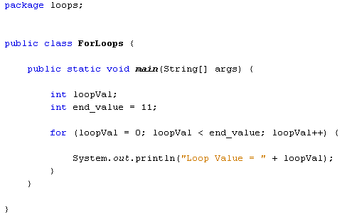
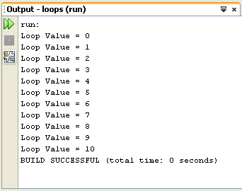
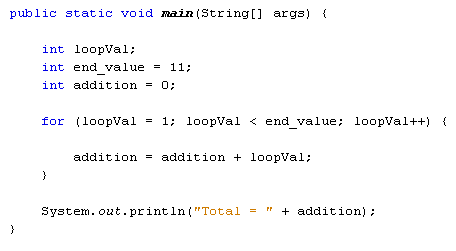

You saw in the last section that one way to "tell" Java not to execute every line is by using IF Statement to section off areas of code.
Another way to interrupt the flow from top to bottom is by using loops. A programming loop is one that forces the programme to go back up again. If it is forced back up again you can execute lines of code repeatedly.
As an example, suppose you wanted to add up the numbers 1 to 10. You could do it quite easily in Java like this:
int addition = 1 + 2 + 3 + 4 + 5 + 6 + 7 + 8 + 9 + 10;
But you wouldn't really want to use that method if you needed to add up the numbers 1 to a 1000. Instead, you can use a loop to go over a line of code repeatedly until you've reached 1000. Then you can exit the loop and continue on your way.
We'll start with For Loops, one of the most common types of loops. The "For" part of "For Loop" seems to have lost its meaning. But you can think of it like this: "Loop FOR a set number of times." The structure of the For Loop is this:
for ( start_value; end_value; increment_number ) {
//YOUR_CODE_HERE
}
So after the word "for" (in lowercase) you have a pair of round brackets. Inside of the round brackets you need three things: the start value for the loop, the end value for the loop, and a way to get from one number to another. This is called the increment number, and is usually 1. But it doesn't have to be. You can go up in chunks of 10, if you want.
After the round brackets you need a pair of curly brackets. The curly brackets are used to section off the code that you want to execute repeatedly. An example might clear things up.
Start a new project for this. Call the Project and Class anything you like.
(We've called our Project "loops", and the Class "ForLoops").
Now add the following code:

We start by setting up an integer variable, which we've called loopVal. The next line sets up another integer variable. This variable will be used for the end value of the loop, and is set to 11. What we're going to do is to loop round printing out the numbers from 0 to 10.
Inside the round brackets of the for loop, we have this:
loopVal =0; loopVal < end_value; loopVal++
The first part tells Java at what number you want to start looping. Here, we're assigning a value of zero to the loopVal variable. This will be the first number in the loop. The second part uses some conditional logic:
loopVal < end_value
This says "loopVal is less than end_value". The for loop will then keep going round and round while the value inside the loopVal variable is less than the value in the variable called end_value. As long as it's true that loopVal is less than end_value, Java will keep looping over the code between the curly brackets.
The final part between the round brackets of the for loop is this:
loopVal++
What we're doing here is telling Java how to go from the starting value in loopVal to the next number in the sequence. We want to count from 0 to 10. The next number after 0 is 1. loopVal++ is a shorthand way of saying "add 1 to the value in the variable".
Instead of saying loopVal++ we could have wrote this:
loopVal = loopVal + 1
To the right of the equals sign we have loopVal + 1. Java will then add 1 to whatever is currently stored in the loopVal variable. Once it has added 1 to the value, it will store the result inside of the variable to the left of the equals sign. This is the loopVal variable again. The result is that 1 keeps getting added to loopVal. This is called incrementing the variable. It is so common that the shorthand notation variable++ was invented:
int some_number = 0;
some_number++;
The value of some_number will be 1 when the code above is executed. It is the short way of saying this:
int some_number = 0;
some_number = some_number + 1;
To recap then, our for loop is saying this:
Loop Start value: 0
Keep Looping While: Start value is less than
11
How to advance to the end value: Keep adding
1 to the start value
Inside of the curly brackets of the for loop we have this:
System.out.println("Loop Value = " + loopVal);
Whatever is currently inside of the loopVal variable will be printed out, along with some text.
Run your programme and you should see this in the Output window:

So we've trapped the programme in a loop, and forced it to go round and round. Each time round the loop, 1 gets added to the loopVal variable. The loop keeps going round and round while the value inside of loopVal is less than the value in end_value. Whatever is inside of the loop's curly brackets is the code that will be executed over and over. And that is the whole point of the loop: to execute the curly bracket code over and over.
Here's some code that adds up the numbers 1 to 10. Try it out:

The answer you should get in the Output window is 55. The code itself is more or less the same as the previous for loop. We have the same two variables set up at the top, loopVal and end_value. We also have a third integer variable, which we've called addition. This will hold the value of the 1 to 10 sum.
In between the round brackets of the for loop, it's almost the same as last time: we're looping while loopVal is less than end_value; and we're adding 1 to the loopVal variable each time round the loop (loopVal++). The only difference is that the starting value is now 1 (loopVal=1).
In between the curly brackets, we only have one line of code:
addition = addition + loopVal;
This single line of code adds up the numbers 1 to 10. If you're confused as to how it works, start to the right of the equals sign:
addition + loopVal;
The first time round the loop, the addition variable is holding a value of 0. The variable loopVal, meanwhile, is holding a value of 1 (its starting value). Java will add 0 to 1. Then it will store the result to the variable on the left of the equals sign. Again, this is the addition variable. Whatever was previously being held in the addition variable (0) will be erased, and replaced with the new value (1).
The second time round the loop, the values in the two variables are these (the values are between round brackets):
addition (1) + loopVal (2);
1 + 2 is obviously 3. So this is the new value that will be stored to the left of the equals sign.
The third time round the loop, the new values are these:
addition (3) + loopVal (3);
Java adds the 3 + 3 and stores 6 to the left of the equals sign. It keeps going round and round until the loop ends. The result is 55.
(Notice that our print line is outside of the for loop, after the final curly bracket of the loop.)
In the next part, we'll take a look at Java while loops.